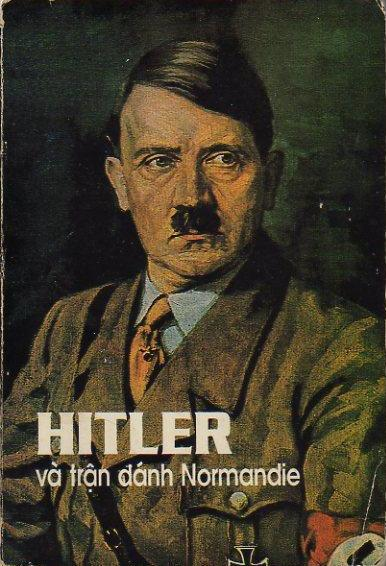

Cuộc đổ bộ Normandie dưới cái nhìn của phe Đức quốc xã
CHIẾN LƯỢC GIA CHỊU TRÁCH NHIỆM PHÒNG THỦ BỨC TƯỜNG THÀNH ĐẠI TÂY DƯƠNG, ĐẠI TƯỚNG HANS SPEIDEL THAM MƯU TRƯỞNG CỦA THỐNG CHẾ ROMMEL - TƯ LỆNH BINH ĐOÀN B- MẶT TRẬN MIỀN TÂY
Trong thời kỳ nguy kịch từ tháng tư đến tháng bảy năm 1944, Đại tướng Hans Speidel là tham mưu trưởng của Thống chế Rommel, tư lệnh Binh đoàn B, mặt trận Miền Tây. Chắc chắn là tác giả có đủ tư cách nhất bên phía Đức để thuật lại các biến cố đánh dấu cuộc đổ bộ ngày 6 tháng 6 ở Normandie cùng các biến cố xảy ra trước đó và tiếp theo sau đó, để rút ra từ đấy bài học lịch sử, cũng như để hồi tưởng lại các xung đột đã xâu xé Bộ Tổng tư lệnh Đức ở cấp bực cao cấp nhất.
Dưới quyền Thống chế Rommel, Đại tướng Hans Speidel đã thiết lập kế hoạch phòng thủ chống lại cuộc đổ bộ của phe đồng minh. Ông đã tìm mọi cách thuyết phục Hitler chuẩn y kế hoạch của mình nhưng hoài công vô ích và ông đã phải điều khiển cuộc chiến trong những điều kiện thảm hại do Fuhrer áp đặt.
Cùng với Rommel và các Đại tướng Von Stulpnagel, Von Falkenhausen và Von Schwerin, ông đã bí mật chuẩn bị âm mưu ngày 20 tháng bảy mà sự thất bại đã đưa ông vào móng vuốt của Sở mật thám Gestapo.